Pasta al ferretto al ragù
€€Tirata a mano sul ferretto, ragù di maiale cotto piano e una grattata di pecorino.
Cucina calabrese di quartiere
Pasta al ferretto tirata a mano, ragù cotto piano, nduja che scalda. Si mangia come a casa, in Calabria. Senza fronzoli, a prezzi di quartiere.
Il cuore della carta. La pasta la tiriamo a mano sul ferretto, come si fa al Sud. Il ragù cuoce piano per ore. È il piatto per cui la gente torna.
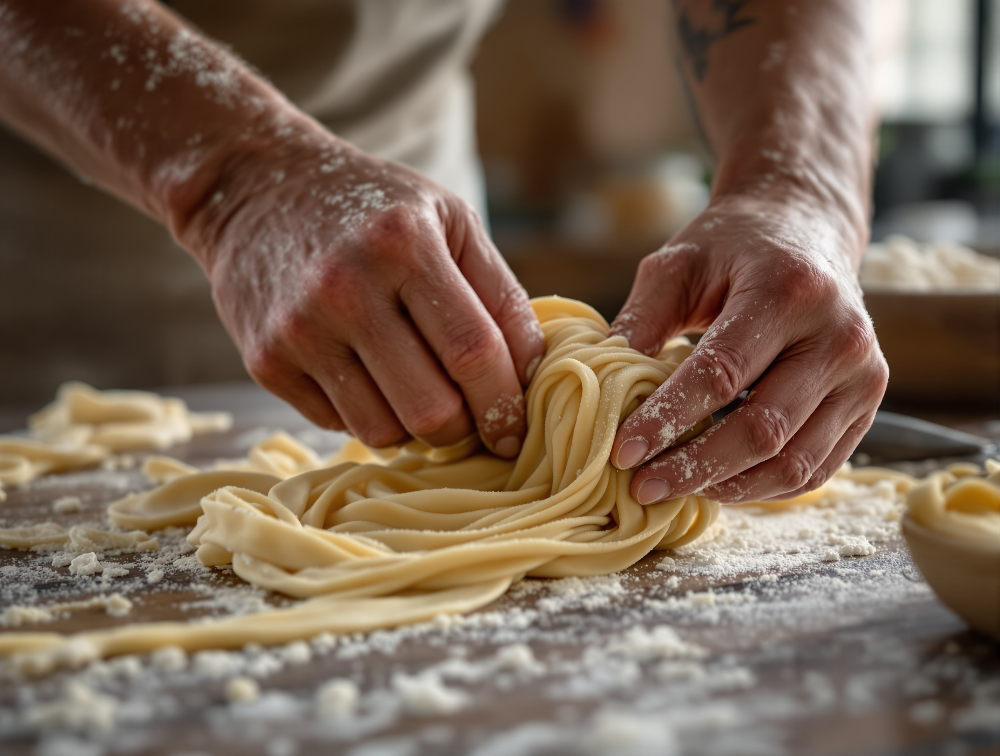
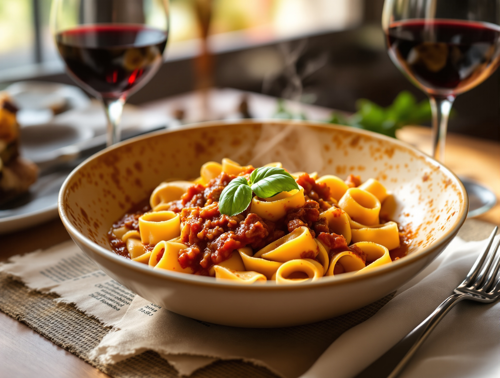
Tirata a mano sul ferretto, ragù di maiale cotto piano e una grattata di pecorino.
La pasta corta calabrese, condita con il sugo del giorno.
Per chi vuole un classico: guanciale croccante, pecorino e pepe. Anche questo si fa come si deve.
Cambia con quello che c'è. Chiedi a noi quando prenoti.
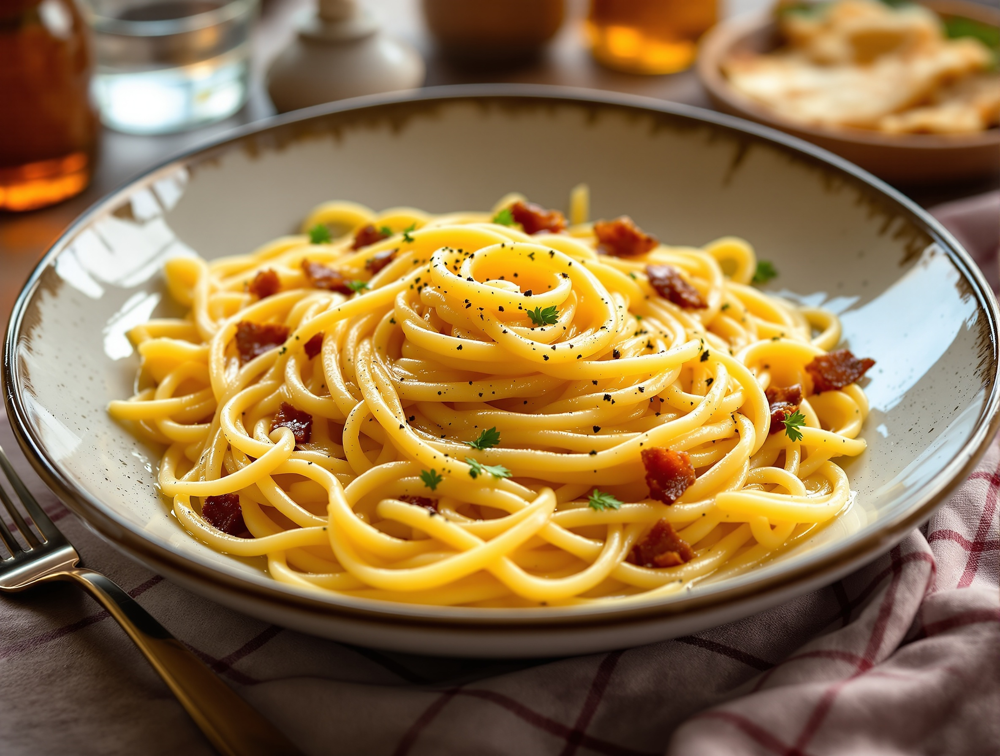
Un classico romano fatto con le mani, non con la fretta.
La nduja è la nostra bandiera: spalmabile, rossa, che scalda. La usiamo sul pane e nel piatto. Se ami il piccante, sei a casa.
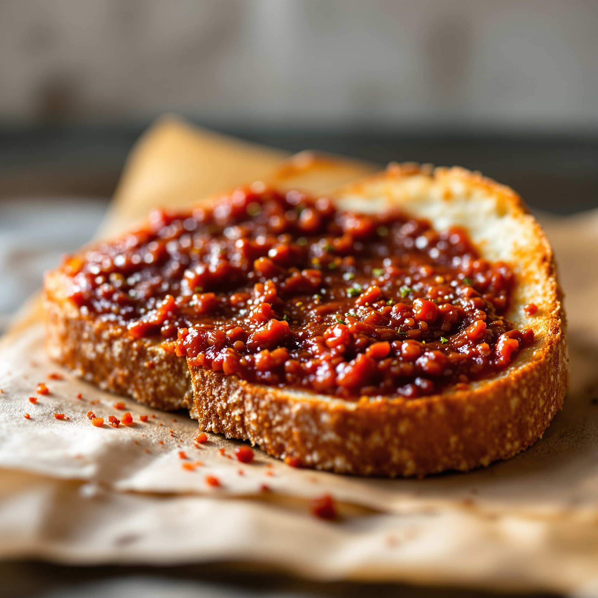
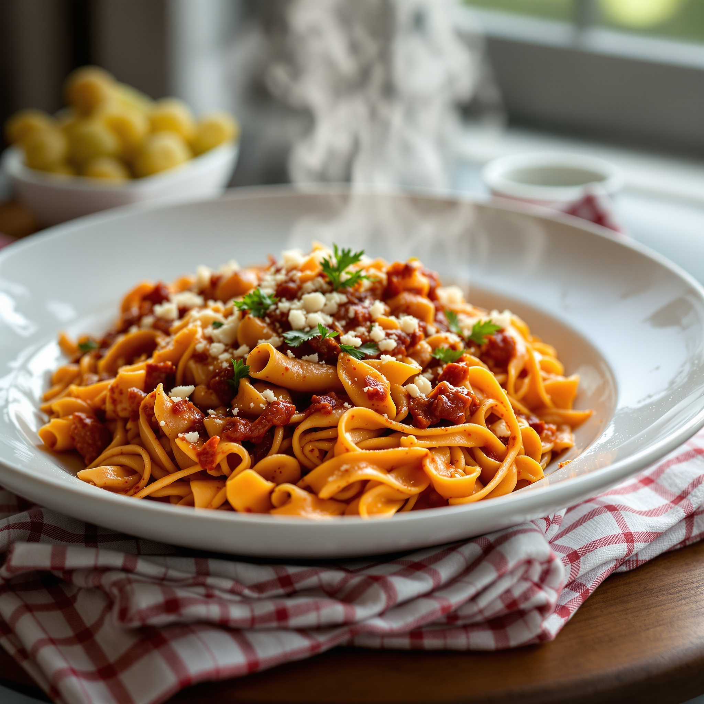
Pane croccante e nduja calabrese. Il modo giusto di iniziare.
Pasta corta e sugo di nduja che si attacca a ogni pezzo, con pecorino.
Il piccante si può calibrare. Diccelo e la facciamo come piace a te.
I dolci li facciamo noi. Tiramisù e cheesecake, casalinga, niente di comprato. È la ragione buona per restare al tavolo un po' di più.
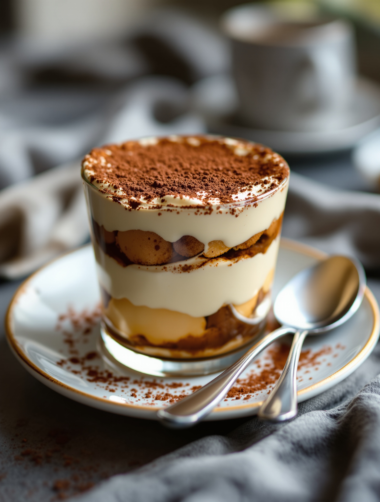
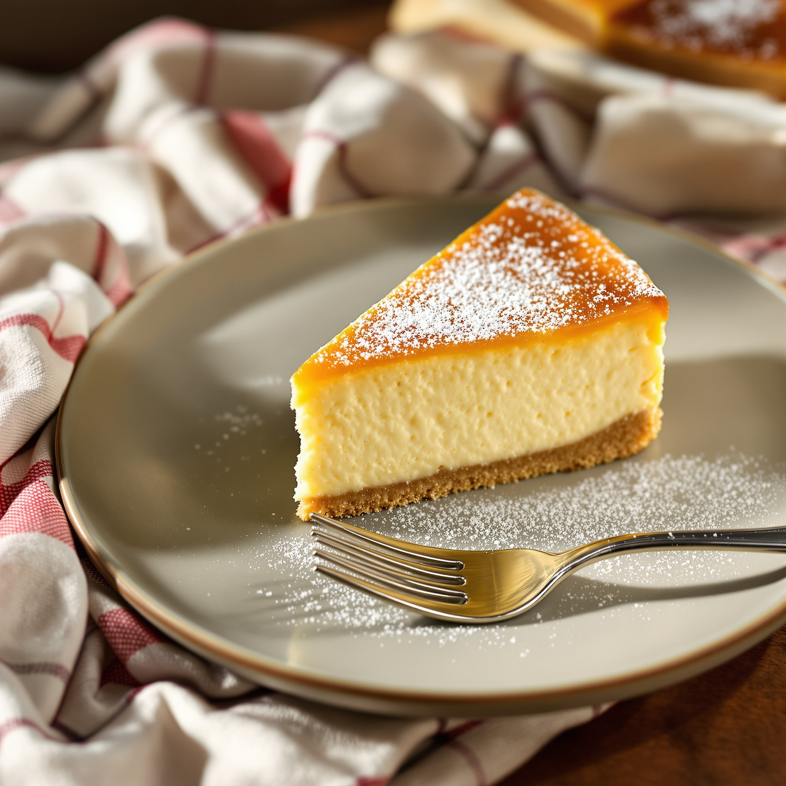
Savoiardi inzuppati nel caffè, crema morbida, cacao. Nel bicchiere.
Base di biscotto dorato, morbida sopra. Semplice e buona.
Qui ci si siede davvero. Un bicchiere di vino della casa, l'espresso, e un cordiale calabrese per chiudere. Niente fretta.
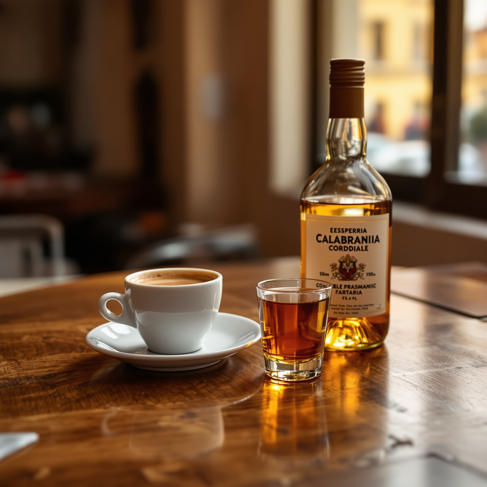
Rosso sfuso, a caraffa o al bicchiere. Onesto, come deve essere.
Il caffè come si fa, e un bicchierino di cordiale per finire.
Siamo a Turro, sulla parte sud di viale Monza. Un quartiere vero, di gente che ci abita. Comodi per chi lavora, chi studia, e per i calabresi di Milano che cercano un sapore di casa.
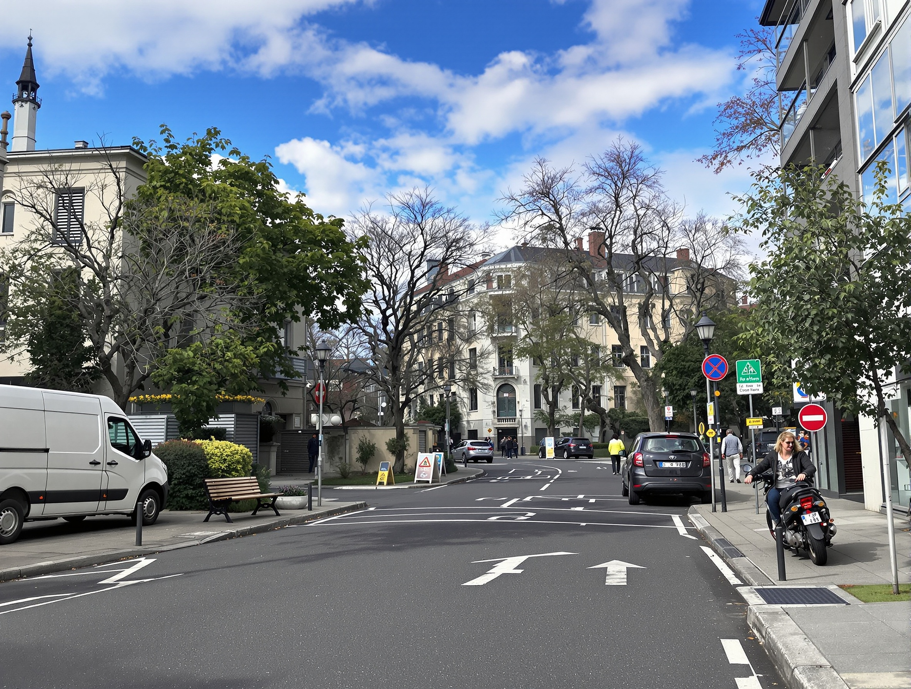
Turro, zona sud di viale Monza — un tavolo di quartiere, non da centro città.
Fermata Turro, linea viola (M2). Da lì, pochi minuti a piedi.
Un pranzo seduto, onesto e veloce, senza spendere una fortuna.
Il ragù, il ferretto, la nduja. Il sapore di giù, senza tornare giù.
Tavoli semplici, tovaglie a quadretti, la televisione accesa in sala. Niente di ricercato: un posto dove stare bene e mangiare in pace.
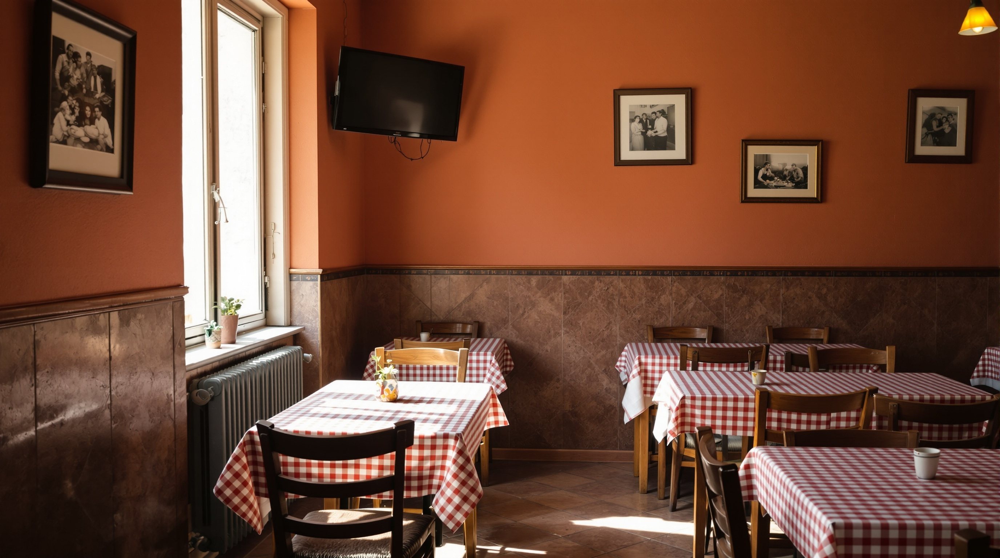
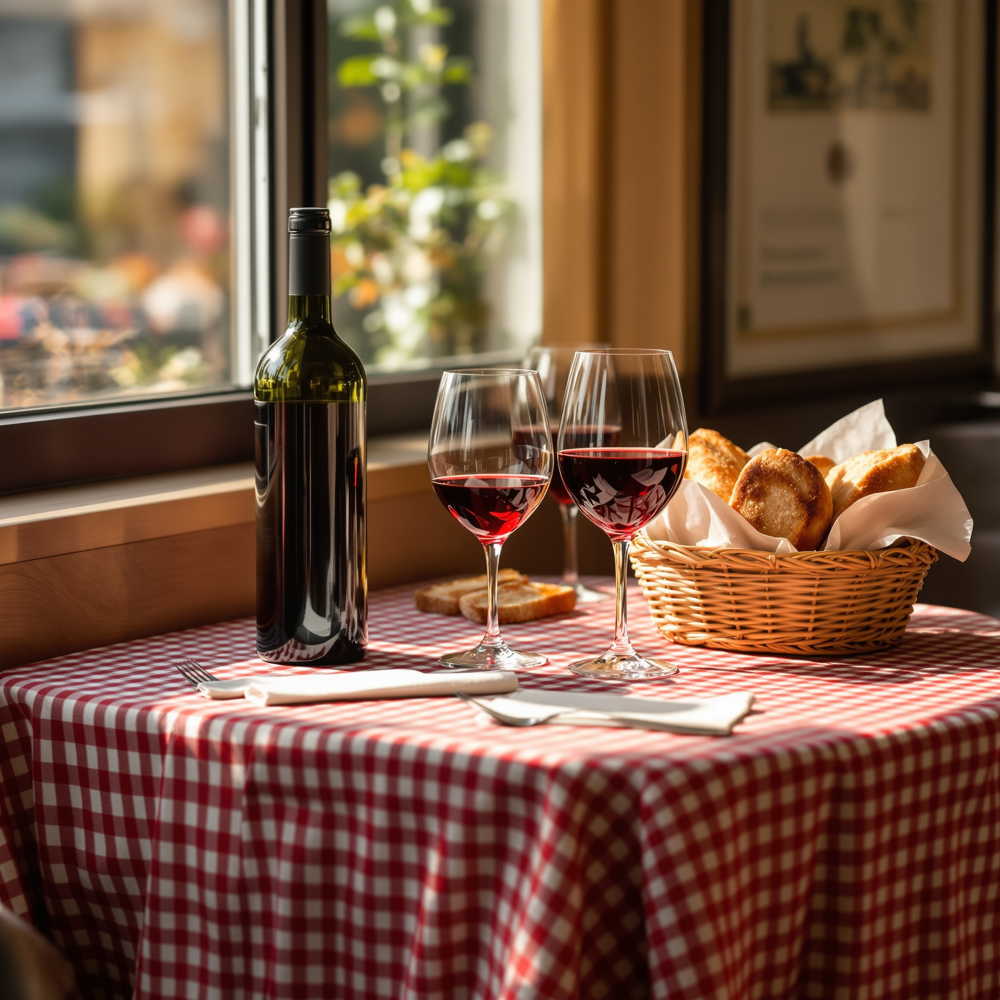
La sala è al piano, comoda da raggiungere.
Un tavolo di quartiere, accogliente con chiunque. LGBTQ+ friendly.
La partita e il telegiornale, come in una sala di quartiere.
Poche regole, chiare. Così la prima volta va liscia.
Si paga in contanti. Portali con te, è più semplice per tutti.
Il posto è piccolo. Una chiamata prima e il tavolo è tuo.
Puoi portarlo via. Niente consegna a domicilio, però.
Non abbiamo i tavoli fuori: la sala è il nostro posto.
Orari indicativi — confermali con una chiamata.
«Cucina calabrese autentica: il ragù e la pasta al ferretto sanno di casa.»
Il tema che torna più spesso nelle recensioni
«Prezzi onesti per Milano — si mangia bene senza spendere tanto.»
Quello che dicono in tanti sul rapporto qualità-prezzo
«Atmosfera tranquilla, di quartiere. Un posto dove tornare.»
Il sentimento generale sulla sala
Un tavolo per due o per la tavolata. Chiama e teniamo il posto.
Oggi si prenota chiamando. Con un tocco su WhatsApp basterà scriverci — così teniamo il tavolo anche quando hai le mani occupate.
Anteprima dimostrativa del servizio di prenotazione via messaggio, da attivare.